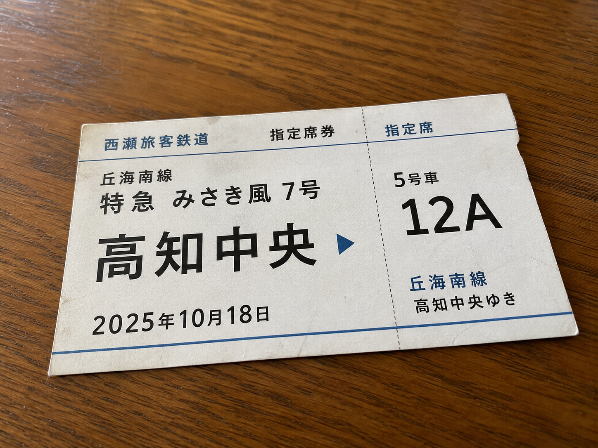

短い小旅行
週末、カナと少し遠くまで出かけました。
ずっと周りを気にしてばかりだった私を見て、カナが「一度、知らない街で息を抜こう」と誘ってくれました。誰かと一緒なら、電車の窓を見ていても怖くありませんでした。
着いた街は坂が多くて、小高い場所から家々の屋根が見えました。駅前を離れると静かで、歩く速度までゆっくりになるような場所でした。いつか落ち着いて暮らすなら、こういう街もいいなと思いました。
場所の名前はここには書きません。使った切符だけ、思い出として残しておきます。

帰ってから撮った切符。捨てる前に一枚だけ。
少し顔色が戻ってよかった。また疲れたら、今度はもっとゆっくり行こう。